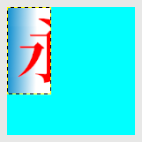
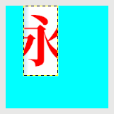
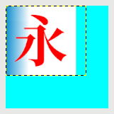
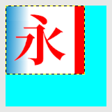
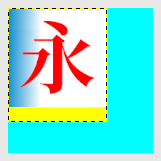

图层→图层边界大小
此命令没有快捷键。
此命令可以调整图层的尺寸。
如果是把图层尺寸改大，那么，图层中的内容保持不变；如果是把图层尺寸改小，那么，图层中超出图层边界的内容会被裁掉。
提示
GIMP中，图层尺寸可以比画布尺寸大，也可以比画布尺寸小。您可以参考图层→新建图层⇒图层尺寸示例
提示
裁剪工具也可以调整尺寸，但影响的是整个图像，不是某个图层。
图层→图层边界大小
宽度/高度
两个输入框右侧的“链”如果没有断开，宽度和高度就会自动保持原比例不变，这种情况下，您在修改其中一个的值时，另一个值会自动改变，以保持宽高比不变。
如果宽高比发生变化，点击对话框底部的“重置”按钮，可以恢复原始尺寸和原始宽高比。
默认的测量单位是像素。您可以在下拉菜单中改为其它单位，例如毫米。
位移X/位移Y
宽度/高度修改后，新图层与原图层尺寸不一致，所以无法完全重合，您可以使用位移参数来指定新图层相对原图层的位置。
位移X和位移Y的值是相对于图层的距离值，与图像/画布无关。
位移值的下方，显示一个尺寸调整的预览，您可以在这里用鼠标直接拖动原图层，来设置新图层的位置。
“中心”按钮
此按钮可以把新图层放在原图层的中心位置。
填充
示例
我们使用下面这个图像来演示本节的菜单命令：
图层边界示例图像
上面的示例图像有如下要素：
有两个图层；
上面图层1的边界为黑黄虚线框；
上面图层1的图层边界以外的区域，填充为透明(棋盘方格)；
下面图层2的边界与画布边界重合；
画布尺寸=1600x1600 像素；
图层1的图层尺寸=1090x1090 像素；
图层1的左边与画布左边重合；
图层1的上边与画布上边重合；
前景色改为红色；
背景色改为黄色；
仅把宽度值改为原来的一半(545)，其它选项不变：

宽度值改为原来的一半(545)加上点击“居中”按钮，其它选项不变：

宽度值改为1250加上填充为透明，其它选项不变：

宽度值改为1250加上填充由透明改为前景色，其它选项不变：

高度值改为1250加上填充由透明改为背景色，其它选项不变：
